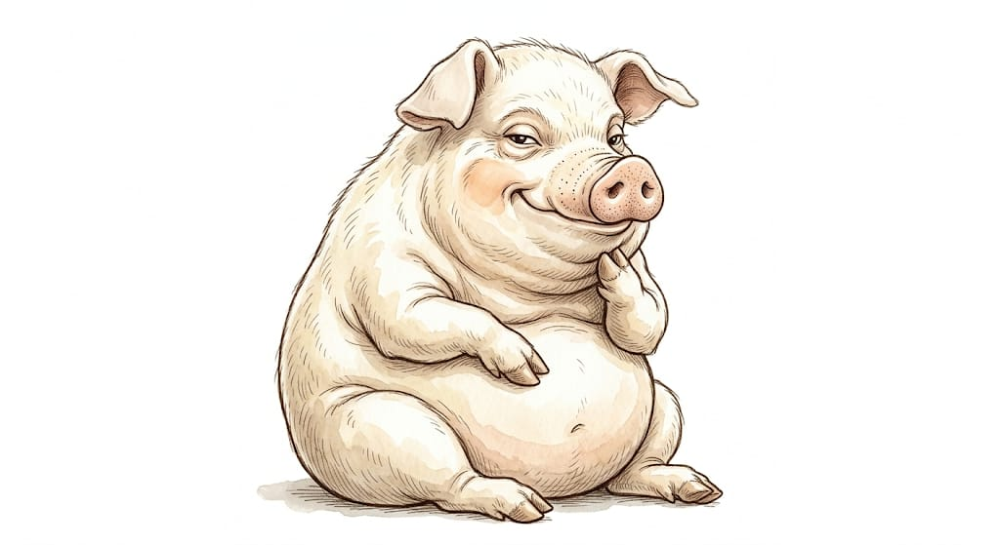

1
After the Old Major's speech and the rebellion animals build their future for themselves, which is the ideal motivation of developing the barnyard
2
For that day we all must labour,
Though we die before it break;
Cows and horses, geese and turkeys,
All must toil for freedom's sake.>
Though we die before it break;
Cows and horses, geese and turkeys,
All must toil for freedom's sake.>
3
All the work of animals in the barnyard is extremely scrupulous, since it is their land and the only hope.
4
Boxer is the character, affected by this ideas the most. His labor is a good example of selflessness
5
"I will work harder" - Boxer
6
As a parallel from modern world of George Orwell the rapid industrialization of Soviet Russia, Korea or Japan is the nearest. These countries demonstrated an economic wonder.
7
Check the next box!
8

9
You found a pig! Sure, not all of animals work equally, some of them do it equallier. Consequences are hard.